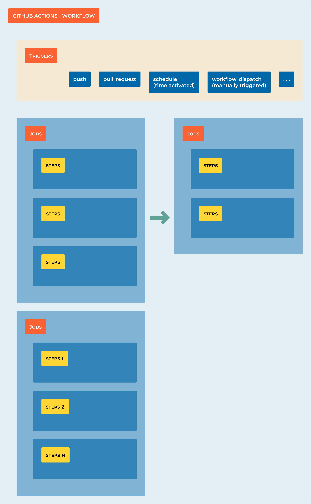

7.1 Getting started
{kind=link}
Learning Objectives
By the end of this section, you will:
Create your first GitHub Actions workflow in under 10 minutes
Understand YAML syntax and workflow structure
Configure different trigger events for your pipelines
Troubleshoot common first-time setup issues
Build and test a Python project automatically
Prerequisites: GitHub account, basic Git knowledge, text editor
Your First Pipeline in 10 Minutes
Let’s get you from zero to working CI/CD pipeline in record time!
Step 1: Quick Repository Setup (2 minutes)
Create a new repository on GitHub called my-first-pipeline
Clone it locally: git clone https://github.com/yourusername/my-first-pipeline.git
Create a simple Python file:
# hello.py
def greet(name):
return f"Hello, {name}!"
if __name__ == "__main__":
print(greet("CI/CD World"))
Step 2: Create the Workflow (3 minutes)
Create directories: mkdir -p .github/workflows
Create workflow file: .github/workflows/ci.yml
name: Quick Start CI
on:
push:
branches: [ main ]
pull_request:
branches: [ main ]
jobs:
test:
runs-on: ubuntu-latest
steps:
- name: Get the code
uses: actions/checkout@v4
- name: Set up Python
uses: actions/setup-python@v5
with:
python-version: '3.12'
- name: Run our script
run: python hello.py
Step 3: Push and Watch (2 minutes)
git add .
git commit -m "Add first CI pipeline"
git push origin main
Step 4: View Results (1 minute)
Go to your GitHub repository
Click the “Actions” tab
Watch your first pipeline run!
Step 5: Celebrate! (2 minutes)
You just created your first CI/CD pipeline!
Tip
What Just Happened?
GitHub detected your workflow file
Spun up a virtual machine (runner)
Installed Python 3.12
Ran your script
Reported success/failure
Troubleshooting: When Things Go Wrong
Problem 1: “Workflow not running”
Symptoms: No workflow appears in Actions tab after pushing
Solutions:
Check file path: Must be .github/workflows/filename.yml
Verify YAML syntax: Use a YAML validator online
Check branch triggers: Make sure you’re pushing to the right branch
File extension: Must be .yml or .yaml
# Debug command to check file structure
find . -name "*.yml" -o -name "*.yaml"
# Should show: ./.github/workflows/ci.yml
Problem 2: “YAML syntax error”
Symptoms: Workflow shows up but immediately fails with syntax error
Solutions:
Indentation matters! Use 2 spaces, not tabs
Quotes matter! Use quotes around special characters
Colons matter! Every key needs a colon and space
# WRONG - inconsistent indentation
jobs:
test:
runs-on: ubuntu-latest
# CORRECT - consistent 2-space indentation
jobs:
test:
runs-on: ubuntu-latest
Problem 3: “Action not found”
Symptoms: Error like “Can’t find action actions/checkout@v5”
Solutions:
Use exact version numbers: @v4 not @v5 (if v5 doesn’t exist)
Check the GitHub Marketplace for correct action names
Verify internet connectivity on runners
Problem 4: “Python script fails”
Symptoms: Python runs but your script has errors
Solutions:
Test your script locally first: python hello.py
Check file paths - runner starts in repository root
Add debugging output to see what’s happening
- name: Debug environment
run: |
pwd
ls -la
python --version
which python
Problem 5: “Runner out of space”
Symptoms: Error about disk space or memory
Solutions:
Clean up before running: sudo apt-get clean
Use smaller base images
Remove unnecessary files
- name: Free up space
run: |
sudo apt-get clean
sudo rm -rf /usr/share/dotnet
sudo rm -rf /opt/ghc
Quick Debugging Checklist:
Is the file in .github/workflows/?
Is the YAML indentation correct (2 spaces)?
Are all strings properly quoted?
Does the script work locally?
Are you pushing to the correct branch?
Warning
Most Common Beginner Mistake: Mixing tabs and spaces in YAML. Set your editor to show whitespace and use only spaces!
Understanding Workflow Structure
Now that you have a working pipeline, let’s understand what each part does:
Workflow Anatomy:
name: Quick Start CI # 1. Workflow name (appears in Actions tab)
on: # 2. Trigger events
push:
branches: [ main ]
pull_request:
branches: [ main ]
jobs: # 3. Jobs run in parallel
test: # 4. Job name
runs-on: ubuntu-latest # 5. Virtual machine type
steps: # 6. Sequential steps
- name: Get the code # 7. Step name (optional)
uses: actions/checkout@v4 # 8. Pre-built action
- name: Set up Python # 9. Another step
uses: actions/setup-python@v5 # 10. Action with parameters
with:
python-version: '3.12'
- name: Run our script # 11. Custom command
run: python hello.py
Key Concepts:
Workflow: The entire automation process (this YAML file)
Job: A group of steps that run on the same runner
Step: Individual task (run a command, use an action)
Action: Reusable code (like installing Python)
Runner: Virtual machine that executes your workflow
Understanding Workflow Triggers
The on keyword defines when your workflow runs. Choose triggers based on your team’s workflow:
Basic Triggers:
# Trigger on any push
on: push
# Trigger on specific branches only
on:
push:
branches: [ main, develop ]
paths: [ 'src/**', 'tests/**' ] # Only when these files change
# Trigger on pull requests
on:
pull_request:
branches: [ main ]
Advanced Triggers:
# Multiple triggers
on:
push:
branches: [ main ]
pull_request:
branches: [ main ]
schedule:
- cron: '0 2 * * *' # Daily at 2 AM
workflow_dispatch: # Manual trigger button
inputs:
environment:
description: 'Environment to deploy to'
required: true
default: 'staging'
type: choice
options:
- staging
- production
Real-World Trigger Strategies:
Feature branches: Run tests on every push to any branch
Main branch: Run tests + deploy to staging
Release tags: Deploy to production
Scheduled: Run security scans nightly
Manual: Emergency deployments or one-off tasks
Tip
Best Practice: Start with simple triggers (push, pull_request) and add complexity as your team grows comfortable with CI/CD.
Example: Complete Python Project Pipeline
Let’s build a production-ready workflow for a Python web application:
name: Production-Ready Python CI
on:
push:
branches: [ main, develop ]
pull_request:
branches: [ main ]
jobs:
test:
runs-on: ubuntu-latest
strategy:
matrix:
python-version: ["3.10", "3.11", "3.12"]
steps:
- name: Checkout code
uses: actions/checkout@v4
- name: Install uv
uses: astral-sh/setup-uv@v3
- name: Set up Python ${{ matrix.python-version }}
run: uv python install ${{ matrix.python-version }}
- name: Install dependencies
run: uv sync --dev
- name: Code quality checks
run: |
uv run ruff check . # Fast linting
uv run ruff format --check . # Format checking
uv run mypy src/ # Type checking
- name: Security scan
run: uv run bandit -r src/
- name: Run tests with coverage
run: |
uv run pytest --cov=src --cov-report=xml --cov-report=term-missing
- name: Upload coverage reports
uses: codecov/codecov-action@v4
with:
file: ./coverage.xml
fail_ci_if_error: true
Why This Pipeline Works Well:
Matrix strategy: Tests across Python 3.10, 3.11, and 3.12
Modern tools: uv for speed, ruff for linting, mypy for types
Security: bandit scans for common vulnerabilities
Coverage: Tracks test coverage and uploads to Codecov
Fast feedback: Parallel jobs complete in ~3 minutes
Common Workflow Patterns
Pattern 1: Fail Fast
Put quick checks first to give developers fast feedback:
jobs:
quick-checks:
runs-on: ubuntu-latest
steps:
- uses: actions/checkout@v4
- name: Install uv
uses: astral-sh/setup-uv@v3
- run: uv run ruff check . # Fast linting first
- run: uv run ruff format --check . # Format check second
thorough-tests:
needs: quick-checks # Only run if quick checks pass
runs-on: ubuntu-latest
steps:
# ... full test suite
Pattern 2: Conditional Jobs
Run expensive jobs only when needed:
jobs:
test:
runs-on: ubuntu-latest
# ... test steps
deploy:
needs: test
if: github.ref == 'refs/heads/main' # Only deploy from main branch
runs-on: ubuntu-latest
steps:
# ... deployment steps
Pattern 3: Artifact Sharing
Share build artifacts between jobs:
jobs:
build:
runs-on: ubuntu-latest
steps:
- uses: actions/checkout@v4
- name: Build package
run: uv build
- name: Upload artifacts
uses: actions/upload-artifact@v4
with:
name: dist
path: dist/
test:
needs: build
runs-on: ubuntu-latest
steps:
- name: Download artifacts
uses: actions/download-artifact@v4
with:
name: dist
path: dist/
Progress Checkpoint
By now you should be able to:
Create GitHub Actions workflows from scratch
Choose appropriate triggers for your use case
Troubleshoot common YAML and workflow issues
Build multi-job pipelines with dependencies
Use modern Python tooling in CI/CD
Next Steps:
In the following sections, we’ll dive deeper into:
Building more complex Python applications with databases
Advanced GitHub Actions features and optimizations
Security scanning and best practices
Multi-environment deployments
Note
Practice Opportunity: Try modifying the Python pipeline above to include additional tools like pre-commit, bandit or safety (dependency vulnerability scanning) on python-version: [3.11, 3.12, 3.13]
steps:
- name: Checkout code
uses: actions/checkout@v4
- name: Set up Python ${{ matrix.python-version }}
uses: actions/setup-python@v4
with:
python-version: ${{ matrix.python-version }}
- name: Install dependencies
run: |
python -m pip install --upgrade pip
pip install flake8 pytest
if [ -f requirements.txt ]; then pip install -r requirements.txt; fi
- name: Lint with flake8
run: |
# Stop the build if there are Python syntax errors or undefined names
flake8 . --count --select=E9,F63,F7,F82 --show-source --statistics
# Exit-zero treats all errors as warnings
flake8 . --count --exit-zero --max-complexity=10 --max-line-length=127 --statistics
- name: Test with pytest
run: |
pytest
Note
Matrix builds: The strategy.matrix allows you to test against multiple Python versions simultaneously, ensuring your code works across different environments.
Example 3: Modern Python CI Pipeline
Here’s a comprehensive CI pipeline using modern Python tools like uv, ruff, and bandit:
name: Python CI with Modern Tools
on:
push:
branches: [ main, develop ]
pull_request:
branches: [ main ]
jobs:
ci:
runs-on: ubuntu-latest
strategy:
matrix:
python-version: ["3.10", "3.11", "3.12"]
steps:
- name: Checkout code
uses: actions/checkout@v4
- name: Set up Python ${{ matrix.python-version }}
uses: actions/setup-python@v4
with:
python-version: ${{ matrix.python-version }}
- name: Install uv
uses: astral-sh/setup-uv@v3
with:
enable-cache: true
cache-dependency-glob: "uv.lock"
- name: Install dependencies
run: |
uv sync --dev
- name: Code formatting check with ruff
run: |
uv run ruff format --check .
- name: Linting with ruff
run: |
uv run ruff check .
- name: Type checking with mypy
run: |
uv run mypy src/
- name: Security scan with bandit
run: |
uv run bandit -r src/ -f json -o bandit-report.json
uv run bandit -r src/
- name: Run tests with pytest
run: |
uv run pytest --cov=src --cov-report=xml --cov-report=term-missing
- name: Upload coverage to Codecov
uses: codecov/codecov-action@v3
with:
file: ./coverage.xml
fail_ci_if_error: true
- name: Upload security report
uses: actions/upload-artifact@v4
if: always()
with:
name: security-report-${{ matrix.python-version }}
path: bandit-report.json
Tip
Modern Python Tools Explained:
uv: Ultra-fast Python package installer and resolverruff: Lightning-fast Python linter and formatter (replaces flake8, black, isort)bandit: Security vulnerability scanner for Pythonmypy: Static type checkerpytest: Testing framework with coverage reporting
Example 4: Python CD Pipeline with Deployment
This workflow shows continuous deployment for a Python application:
name: Python CD Pipeline
on:
push:
branches: [ main ]
tags: [ 'v*' ]
jobs:
# First run CI to ensure quality
test:
uses: ./.github/workflows/ci.yml # Reference the CI workflow
# Build and package the application
build:
needs: test
runs-on: ubuntu-latest
steps:
- name: Checkout code
uses: actions/checkout@v4
- name: Set up Python
uses: actions/setup-python@v4
with:
python-version: "3.11"
- name: Install uv
uses: astral-sh/setup-uv@v3
- name: Build package
run: |
uv build
- name: Upload build artifacts
uses: actions/upload-artifact@v4
with:
name: python-package
path: dist/
# Deploy to staging environment
deploy-staging:
needs: build
runs-on: ubuntu-latest
environment: staging
steps:
- name: Download artifacts
uses: actions/download-artifact@v4
with:
name: python-package
path: dist/
- name: Deploy to staging
run: |
echo "Deploying to staging environment..."
# Example deployment commands:
# pip install dist/*.whl
# systemctl restart myapp
# Or deploy to cloud platform
- name: Run smoke tests
run: |
echo "Running smoke tests on staging..."
# curl -f http://staging.myapp.com/health
# python -m pytest tests/smoke/
# Deploy to production (only on tags)
deploy-production:
needs: deploy-staging
runs-on: ubuntu-latest
environment: production
if: startsWith(github.ref, 'refs/tags/v')
steps:
- name: Download artifacts
uses: actions/download-artifact@v4
with:
name: python-package
path: dist/
- name: Deploy to production
run: |
echo "Deploying version ${{ github.ref_name }} to production..."
# Production deployment commands
- name: Create GitHub release
uses: softprops/action-gh-release@v1
with:
files: dist/*
generate_release_notes: true
Example 5: Complete Python Project Structure
For these workflows to work, your Python project should have this structure:
my-python-project/
├── .github/
│ └── workflows/
│ ├── ci.yml
│ └── cd.yml
├── src/
│ └── myapp/
│ ├── __init__.py
│ └── main.py
├── tests/
│ ├── __init__.py
│ ├── test_main.py
│ └── smoke/
│ └── test_health.py
├── pyproject.toml
├── uv.lock
└── README.md
Sample pyproject.toml:
[build-system]
requires = ["hatchling"]
build-backend = "hatchling.build"
[project]
name = "myapp"
version = "0.1.0"
description = "My awesome Python app"
dependencies = [
"fastapi>=0.100.0",
"uvicorn>=0.20.0",
]
[project.optional-dependencies]
dev = [
"pytest>=7.0.0",
"pytest-cov>=4.0.0",
"ruff>=0.1.0",
"mypy>=1.5.0",
"bandit>=1.7.0",
]
[tool.ruff]
target-version = "py310"
line-length = 88
[tool.ruff.lint]
select = ["E", "F", "I", "N", "W", "UP"]
[tool.mypy]
python_version = "3.10"
strict = true
[tool.pytest.ini_options]
testpaths = ["tests"]
addopts = "--strict-markers --strict-config"
Sample Python Application
src/myapp/main.py:
"""A simple FastAPI application."""
from fastapi import FastAPI
app = FastAPI(title="My App", version="0.1.0")
@app.get("/")
def read_root() -> dict[str, str]:
"""Return a welcome message."""
return {"message": "Hello, World!"}
@app.get("/health")
def health_check() -> dict[str, str]:
"""Health check endpoint."""
return {"status": "healthy"}
if __name__ == "__main__":
import uvicorn
uvicorn.run(app, host="0.0.0.0", port=8000)
tests/test_main.py:
"""Tests for the main application."""
from fastapi.testclient import TestClient
from myapp.main import app
client = TestClient(app)
def test_read_root():
"""Test the root endpoint."""
response = client.get("/")
assert response.status_code == 200
assert response.json() == {"message": "Hello, World!"}
def test_health_check():
"""Test the health check endpoint."""
response = client.get("/health")
assert response.status_code == 200
assert response.json() == {"status": "healthy"}
Best Practices for Python CI/CD
Use modern tools:
uvfor dependency management,rufffor linting/formattingPin versions: Lock your dependencies with
uv.lockMulti-environment testing: Test against multiple Python versions
Security scanning: Include
banditand dependency vulnerability checksCoverage tracking: Aim for >90% test coverage
Type safety: Use
mypyfor static type checkingEnvironment separation: Use GitHub environments for staging/production
Tip
Quick Setup Commands:
# Initialize a new Python project with uv
uv init myapp
cd myapp
# Add development dependencies
uv add --dev pytest pytest-cov ruff mypy bandit
# Create basic CI workflow
mkdir -p .github/workflows
# Copy the CI example above to .github/workflows/ci.yml